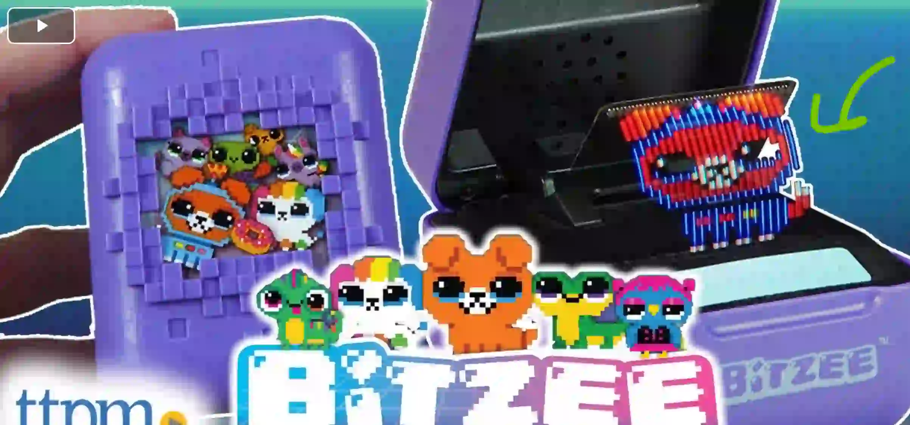

<!-- for preview -->
<link rel="preconnect" href="https://fonts.googleapis.com">
<link rel="preconnect" href="https://fonts.gstatic.com" crossorigin>
<link href="https://fonts.googleapis.com/css2?family=Vazirmatn:wght@100..900&display=swap" rel="stylesheet">


<style>
  article {
    max-width: 50vw;
    margin: auto;
    border: 1px solid black;
    border-radius: 8px;
    padding: 10px 20px;
  }

  article {
    font-family: "Vazirmatn", sans-serif;
    font-optical-sizing: auto;
    font-weight: 300;
    font-style: normal;
  }

  article h1 {
    text-align: center;
  }

  article img {
    max-width: 100%;
    max-height: 80vh;
  }
</style>

<!-- begins -->

<article>
  <h1 dir="auto">
    صفحه نمایش
    BitZee
  </h1>

  <p dir="auto">
    صفحه نمایش این دستگاه
    از تعداد کمی پیکسل
    روی یک سطر تشکیل شده.

    این یک سطر پیکسل توسط صفحه کوچکی دائم در حال حرکت است
    و به شما توهم یک صفحه دو بعدی را می‌دهد
  </p>

  <figure>
    
    <figcaption>
      <ul>
        <li>
          <a href="https://www.youtube.com/watch?v=3Ea5cx6dM48">
            https://www.youtube.com/watch?v=3Ea5cx6dM48
          </a>
        </li>
        <li>
          <a href="https://www.youtube.com/watch?v=bQc_rQpMJWk">
            https://www.youtube.com/watch?v=bQc_rQpMJWk
          </a>
        </li>
      </ul>
    </figcaption>
  </figure>

</article>

<tags>
  #fun
  #technology
  #monitor
  #pixel_art
</tags>